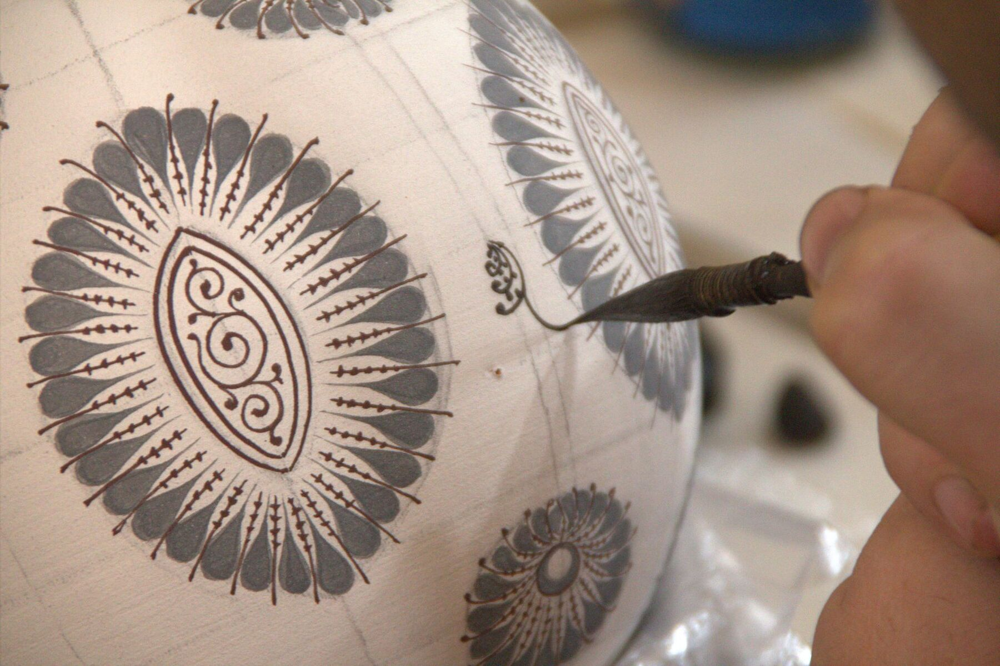
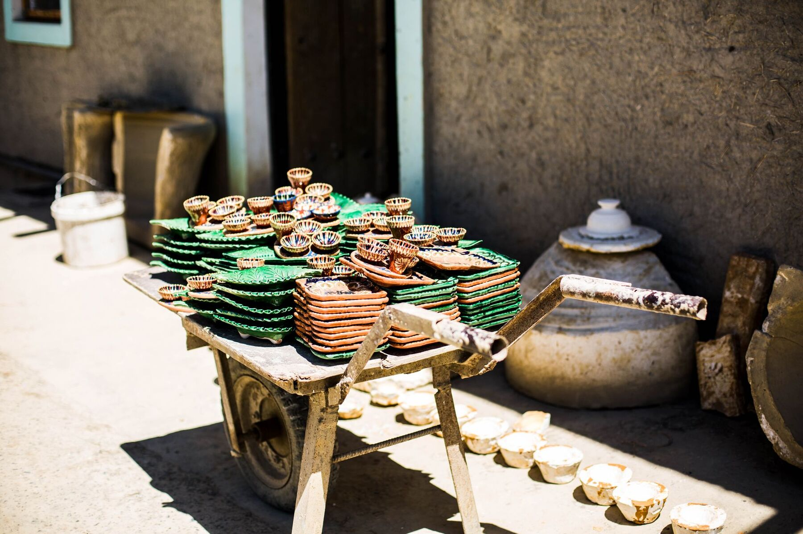
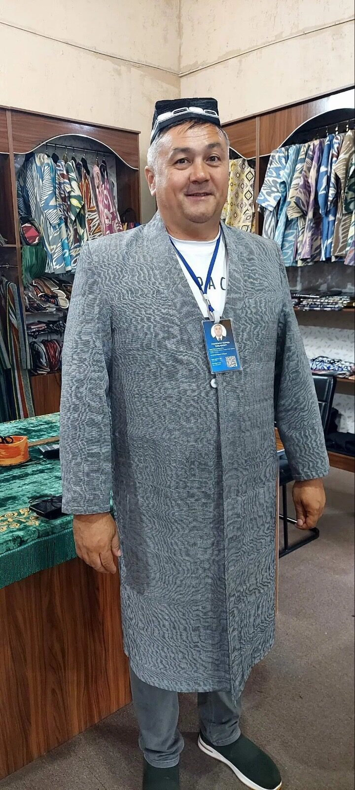

Silk, ceramics, and craftsmanship
The Fergana Valley is the most densely populated part of Uzbekistan and one of the most culturally rich. This is where the famous crafts come from — the blue ceramics of Rishtan, the ikat silk of Margilan, the knives of Kokand and Chust.
Kokand was an important khanate until the Russian conquest in 1875. Its palaces and mosques speak of a sophisticated royal culture — and because it is less visited than Samarkand or Bukhara, you see it more honestly.



Tell us what you want to see and we will plan the day around you.
Plan My Trip